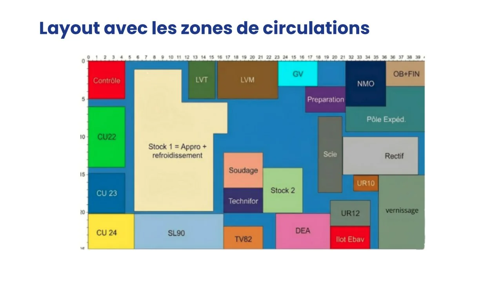

Comparer charge et capacité
Ramener les besoins et les ressources au même horizon pour identifier les postes saturés et les marges disponibles.
03 / PERFORMANCE INDUSTRIELLE
Boscha : une étude de cas qui relie charge des machines, circulation des pièces et choix d’investissement.

01 / LE DIAGNOSTIC
Un atelier peut disposer de ressources tout en accumulant des retards sur un poste critique.
Le cas Boscha porte sur une gamme d’injecteurs. Nous avons étudié les gammes de fabrication, la charge des postes et les règles de lancement pour comprendre ce qui limite réellement le débit.
02 / LA MÉTHODE
Ramener les besoins et les ressources au même horizon pour identifier les postes saturés et les marges disponibles.
Construire une matrice de flux entre les opérations, les stockages et les étapes de sous-traitance.
Utiliser une proposition algorithmique comme point de départ, puis la retravailler pour intégrer les circulations et la forme réelle des postes.
LE PASSAGE AU CONCRET
L’implantation proposée intègre des zones de circulation entre les postes.

BOSCHA / DANS L’ATELIER
Le centre CU22 intervient dans l’usinage des boîtiers et du SFPACK. Une file devant cette ressource peut retarder les opérations situées en aval.
Le CU22 est identifié comme poste critique dans le rapport. Les pièces en attente illustrent ce mécanisme ; leur nombre n’est pas une mesure de l’étude.
Schéma explicatif issu du rapport Boscha : boîtiers, SFPACK et centre CU22. Les étapes sont simplifiées, sans représenter une gamme complète ni un débit réel. L’onglet implantation affiche le véritable plan du livrable.
03 / ARBITRER
Ajouter de la capacité par une équipe de fin de semaine.
À examiner : coûts récurrents et contrainte sociale.Renforcer le poste identifié comme goulot.
À examiner : investissement et déplacement du goulot.Redistribuer la charge entre plusieurs équipements.
À examiner : faisabilité des gammes et formation.La comparaison croise effets capacitaires, coûts et contraintes d’organisation. Elle débouche sur une recommandation progressive, plutôt que sur un achat de machine considéré isolément.
Options étudiées dans le rapport Boscha. Les effets attendus sont des résultats d’étude, pas des gains d’usine constatés.
04 / CE QUE J’EN RETIENS
Une implantation mathématiquement intéressante peut devenir inutilisable si elle oublie les accès et les circulations.
Ce projet met en regard le modèle et l’usage concret de l’atelier. Il m’a appris à examiner une solution à plusieurs échelles : le poste, le flux complet, puis les moyens nécessaires à sa mise en œuvre.
Étude collective. Présentation des méthodes et arbitrages documentés dans les livrables OREXA.
Utiliser les mesures de production pour comprendre la variabilité.